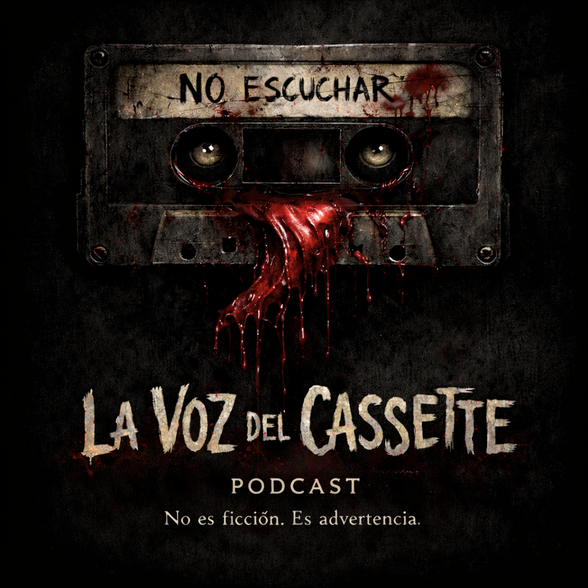

LA VOZ DEL CASSETTE
La Voz del Cassette es un podcast de terror psicológico basado en grabaciones recuperadas.
Cada episodio revela fragmentos de historias perturbadoras: voces, recuerdos y sucesos que quedaron atrapados en el tiempo.
No todas las grabaciones están completas.
No todas deberían ser escuchadas.